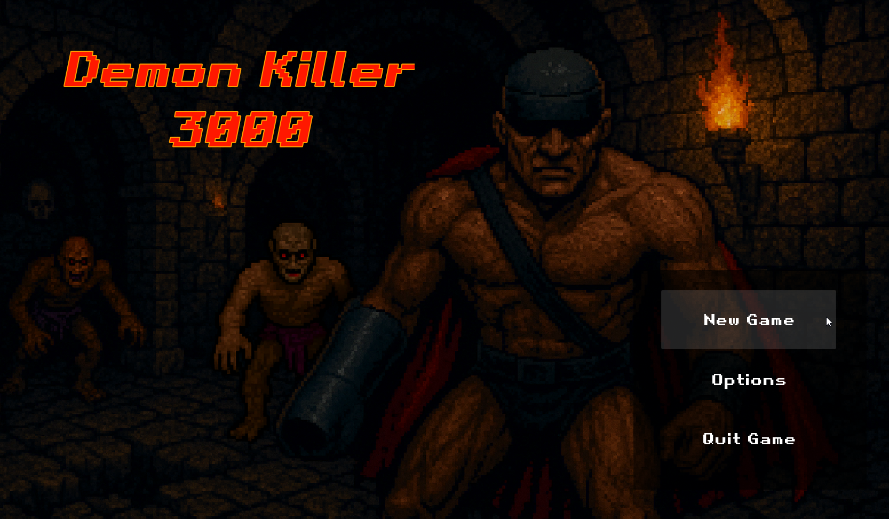
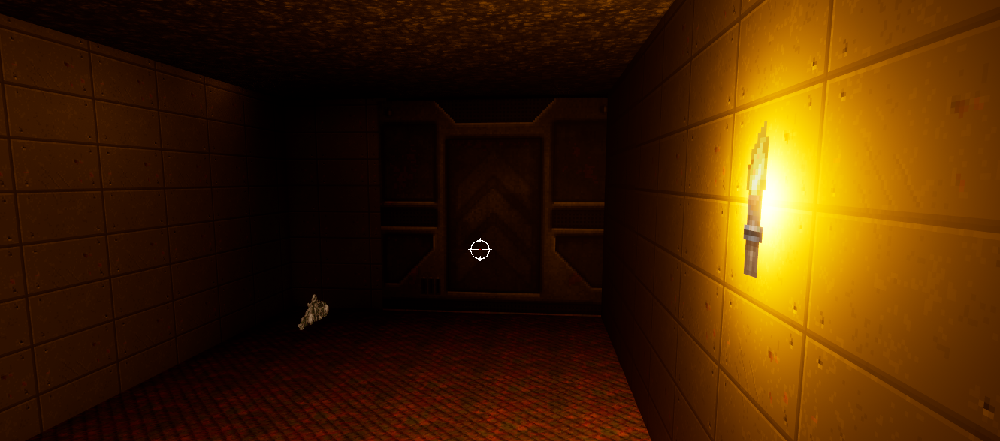
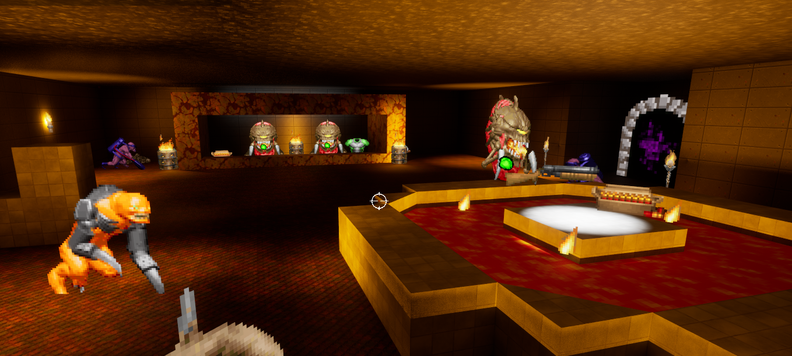
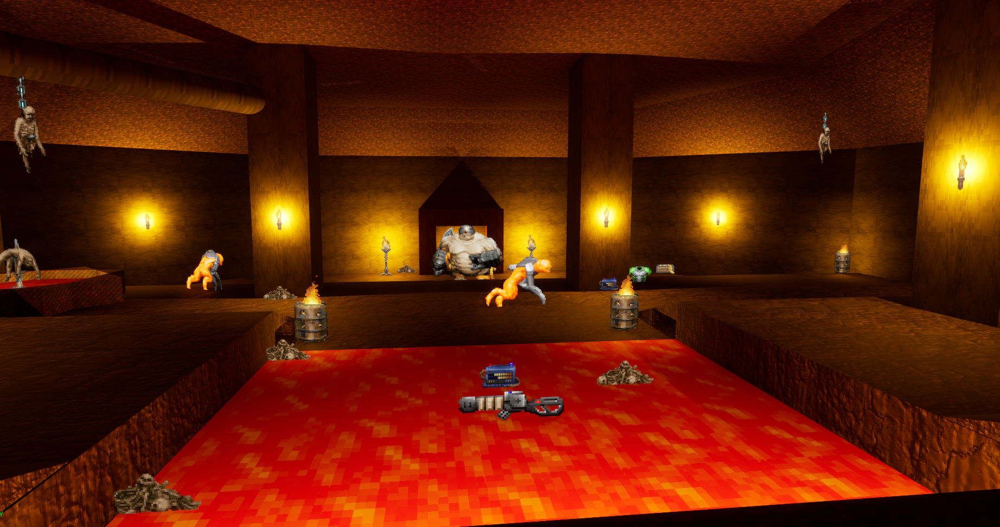

Project "Demon Killer 3000"
Initially, it was a very short course about working with 2.5D textures in Blueprints. I decided to finish it and make a full-fledged level with two maps: an introductory section and a separate location with a boss.
It was amazing try to recreate the style and atmosphere of such game as Doom 1993 or Blood.
While making this project I got priceless experience working with:
- PaperSprites and sprites overall. To be honest - I don't like them haha :)
- Players HUD and information updates(such as ammo or health). UI widgets.
- Different weapons, their projectiles, damage and ammo systems.
- AI: behavior trees, nav meshes, sensing components.
- Items to interact: doors, portals, pickups, explosive barrels.
- Level design: now I definitely appreciate more the WORK that level and narrative designers do - it's so hard to create a level so it's interesting for player to explore or engage with something.
- A lot of time was spent tweaking sounds and textures.
Screenshots




Gameplay
Design details
One of the coolest features that I did here was - activating portal when player pick up the Shotgun